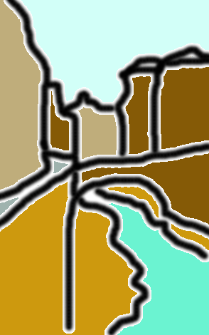

S2F
S2F (Sequence to Function) is a network propagation method for the functional annotation of newly sequenced organisms. It builds a composite interaction network for an organism for which only the protein sequences are known, by transferring functionally relevant information from model organisms, and then propagates known labels over it. It was published in Nature Machine Intelligence.
The implementation is in Python and is maintained by the Paccanaro Lab. The code is available on GitHub, and the paper is here.
GOssTo and GOssToWeb
GOssTo and GOssToWeb are tools to calculate the semantic similarity between genes or terms in the Gene Ontology.
GOssTo is a command-line tool implemented in Java that can be run through an intuitive command-line interface or easily integrated as a library into a pipeline. It runs on Windows, GNU/Linux and MacOS. No installation is required. To use it, just download the file and run it.
GOssToWeb is a web enabled version of GOssTO – you can use it to calculate semantic similarities without the need to download and install the standalone version of GOssTO. Access GOssToWeb here.
GOssTo is free software released under the GPLv3 and its code can be downloaded here.
ConSAT
ConSAT is a command-line tool for automatic annotation of gene families. ConSAT is built on top of GFam, providing extra functionality and higher efficiency. It is implemented in Python.
ConSAT stands for “Consensus Signature Architecture Tool”. Using ConSAT on a set of protein sequences you can get their corresponding protein families. The protein families, for our purpose, are consensus domain architectures. Proteins within the same family are assumed to share many properties among them as they are assumed to descend from a common ancestor –that is, they are evolutionarily related. Thus, protein families can be of a good help in the study of large protein sets, moving us from the study of single sequences to the study of the set of families (the number of families found will be lower than the set of individual sequences). More details and documentation can be found here.
The way ConSAT builds the architectures is by combining two sources of data: (1) domain assignments from InterPro, and (2) domain assignments from GFams (our own library of putative domains). The combination is done in a way that no overlapping domains will be allowed, and maximising the sequence coverage. ConSAT assigns functional labels to the architectures in two flavours: Gene Ontology terms and free text English words.
ConSAT is also a web server with UniProtKB proteins having their architecture precomputed, and the possibility of accessing to ConSAT without having to use the terminal. It can be accessed here.
ConSAT is free software released under the GPLv3 and its code can be downloaded here.
Garnata
Garnata is an information retrieval system for structured (XML) documents, written in C++. Unlike a conventional engine, which ranks flat documents, Garnata ranks the individual elements of a document tree, so that a query can return the specific section that answers it rather than the whole text. Retrieval is modelled with Bayesian networks and influence diagrams: the network captures the dependencies between elements and terms, and the utility model decides which elements are worth returning given that returning a parent makes its children redundant.
It was built during my doctorate at the University of Granada and evaluated at the INEX campaigns between 2006 and 2009. The code is more than twenty years old and I have released it as it was, without modernisation. It is free software under the GPLv3 and the repository is on GitHub.
DauroLab

{kind=link}
The development process, and some documentation can be found on the daurolab blog, where I also hope to receive some feedback.